Proprietary to General Electric
Direction 5500113, Rev# 3
Discovery MR450 1.5T Service Methods
Module Version 3.0, Version Date 6/3/10
Proprietary to General Electric |
| Required Persons | Preliminary Reqs | Procedure | Finalization |
|---|---|---|---|
| 1 | Not Applicable | 1.5 hours | Not Applicable |
Insert the MR Applications CD or DVD into the Host CD/DVD drive on the GOC (not the one on the SCSI tower).
When the confirmation shown in Illustration 1 displays, click [Yes].
Illustration 1: Autorun Confirmation
When the message to turn off power to the DASM (shown in Illustration 2) displays, do so if one is present.
Illustration 2: Turn Off Power to DASM Message

Select [OK] to continue with the software load when the message in Illustration 3 or Illustration 4 displays. The system is now partitioning the hard drives.
Illustration 3: Disk Partitioning Pop-Up
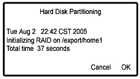
Illustration 4: Disk Partitioning Screen for HDx

When a window displays with options to [Continue], [Halt] or [Close], do not make a selection; let the program run. After two (2) minutes, the system will automatically reboot.
When a menu displays asking for locale selection, select the language and click [OK]. Eventually, the Guided Install screen will display.
Illustration 5: Select Location Menu

When a window displays indicating improvements were made from the previous software version, click [OK] to continue.
| ||||
| The last GI configuration can be installed only if it was previously saved using the [Save GI Configuration to MOD]. | ||||
A message box (shown in Illustration 6) for restoring the Guided Install GUI configuration will display.
If the GI configuration was not saved or a software load is being performed for the first time, press the [Cancel] button to continue manually with the installation, or
If the GI configuration was saved, insert the SaveInfo MOD or CD/DVD, and click the appropriate media radio button.
Illustration 6: Guided Install Configuration Screen

Press the [OK] button.
| NOTE: | The normal SaveInfo files will be restored later in the software load process. |
Click each tab to verify the correct values were restored. If any parameters do not match the expected criteria, the left column will be red. If everything is acceptable, all values will be black. If a value is changed, it will be noted in blue. (See Illustration 7.)
Illustration 7: Guided Install - Configuration Screen
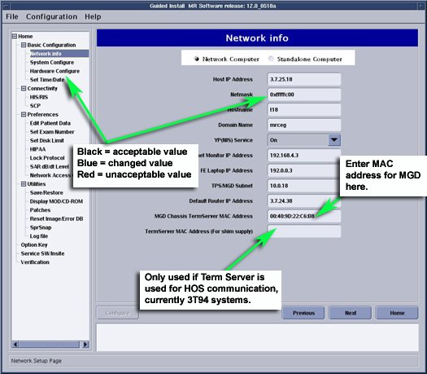
| NOTE: | For release 14.x, the proper LPCA configuration must be added to the hardware configuration. To view the different options, click the [More Info] button to the right of the LPCA Configuration Type. |
If failures are noted, click on the failure and select Go to Tab to display the proper tab.
If the GI configuration was successfully restored from the MOD or CD/DVD, it should not be necessary to change any of the parameters in the Guided Install.
It is not necessary to complete the tabs in any particular order. However, all required configuration tabs must be completed, or the installation will not continue.
| ||||
| If loading software for the first time on a Linux PC, the initial boot-up will fail. Manually enter the “Term Server” information on the Network Info screen. The information must be entered in the format shown in the following example: 20:2D:90:22:44. Use colons between two digits; letters are case sensitive. | ||||
Proceed to the Verification tab shown in Illustration 8. Check the current settings and a pass or fail status, making any necessary changes. (Failed entries are due to missing entries or those with an incorrect format.)
Go to the tab with the error, correct it, then press the [Install] button to open the Verification tab again.
If all entries pass verification at this point, click the [Install Software] button (shown in Illustration 8) to begin the MR Applications load. (The button will not activate if there are any failures.)
Illustration 8: Guided Install - Verification Tab

When a message window displays with Verify time and zone, click [Confirm] to continue or [Abort] to return to Guided Install.
If the Time/Date and Zone are incorrect, select the Set Time & Date option from Guided Install, and make the necessary corrections. The Verification tab will redisplay.
A message will display with Software Installation in progress, which indicates the software is loading. The MR Applications load will take 7 to 12 minutes, depending on the system it is loaded on.
Once the MR Applications load is complete and the message shown in Illustration 9 displays, click [OK] to close this window.
Illustration 9: Guided Install - Software Load Complete
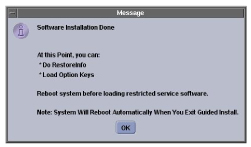
If a message displays asking, Do you want to run media/cdrom/autorun?, always click [No] or [Ignore]. Do not select [Yes].
At this point, the GUI will change from the Install phase. If a SaveInfo MOD or CD/DVD is not available, go to each tab of the Guided Install and complete or update all system information manually. (A Help button is available on each tab that will open a pop-up with information on the required data and its format for that page.)
Remove the MR Applications CD/DVD from the GOC.
If doing an Lx to HDx upgrade, RestoreInfo must be done at this time, or options will not be converted to HDx. Option conversion is restricted to the first RestoreInfo. If a restore from the same info is done a second time without a Load from Cold, converted options will be lost.
To perform the RestoreInfo at this time, go to Guided Install, and choose Save/Restore to display the Save/Restore tab shown in Illustration 10.
Select [Restore Information], and choose the proper media (either MOD or CD/DVD).
Insert the proper media, and select [Restore all files automatically].
Illustration 10: Save/Restore Screen
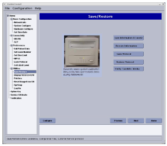
| NOTE: | If restoration fails, the media will automatically eject. Exit the Guided Install and allow the system to reboot. When the system has restarted, return to the Guided Install and attempt to RestoreInfo again. |
A RestoreInfo in Progress window will scroll filenames as they are restored. When the RestoreInfo is complete and the message shown in Illustration 11 displays with the instructions to run the update utility, click [OK] to continue.
Illustration 11: Guided Install - Update Utility Message

When the Restore Manager menu shown in Illustration 12 opens, make sure the All box is selected to restore all items, then click the [Update] button.
Illustration 12: Guided Install - Restore Utility

When the update is complete, click [Quit] and [Yes]. A message similar to Illustration 13 will display with the location of the logfile of changes made by the Restore Manager.
Illustration 13: Log File

In the next window that displays, click [OK] to exit the Guided Install. If everything updates successfully, click [Quit] and select [OK].
Beginning with Signa 10.x, coil parameters have changed. For upgrades from 8.x or 9.x, a coil update will run to add the new parameters to the existing coil definitions.
| ||||
| If there are unknown coils that do not map to a known coil configuration, such as a research coil, inform the customer of the situation. GE Service must NOT change individual parameters for research coils. The customer must work with the Coil Vendor to obtain the proper coil config file. | ||||
The success of the update is dependant on recognition of coil names. If no discrepancies are found, continue to Step 2.c. If any coils are not recognized during the update, the error message shown in Illustration 14 will display.
Illustration 14: Coil Config Upgrade Status Message with Unknown Coils Found

If unknown coils are found, click [OK], finish the software load, then:
Go to the Common Service Desktop => Configuration => Config File Manager => CoilConfig.
Select the Manage Unknown Coils option, and add all unknown coils. For instructions on properly managing unknown coils, refer to the Unknown Coils Configuration.
If a DASM is present, turn the power back on.
Reboot the system at this time by typing: reboot in a C-shell.
Log into the system with the user name of root and password of operator.
Load the VRE software as follows:
Go into Guided Install and select VRE Configuration to display the VRE Configuration tab shown in Illustration 15.
Illustration 15: VRE Configuration Tab

Click on [Configure VRE Blades].
Verify that the VRE Blades are properly installed and all hardware connections are in place, including Ethernet connections.
Select the proper number (1, 2 or 4) of ICNs or VRE Blades. (Choose 1 or 2 when silver 5127452-3 ICNs are installed, and 2 or 4 when black 5127452 ICNs are installed.)
| NOTE: | Either black or silver ICNs will be installed. A combination of the two hardware types will not work on the system and should not be present. |
This procedure will take 15 to 20 minutes to complete depending on the number of ICNs in the system.
The screen shown in Illustration 16 will display indicating the progress.
Illustration 16: VRE Configuration Progress

Once the configuration completes successfully, click [OK]. It is not necessary to perform a system restart at this time.
| NOTE: | If experiencing configuration problems, refer to VRE Troubleshooting. |
| ||||
| If the system does not properly boot on the first attempt, the Term Server may need to be reset. If this is the first or initial software load, perform a Term Server Reset as follows: | ||||
Remove the power connector from the Term Server.
Connect power to the Term Server while pressing and holding the [Reset] button (small square button next to the power jack) for about 20 seconds.
If communication problems are perceived between the Linux PC and Term Server, ping the Term Server as follows:
Open a C-shell.
Type: cd /etc and press <Enter>.
Type: more hosts and press <Enter>.
Ping the TS1 address by typing: ping x.x.x.7 and press <Enter>.
| NOTE: | Proper communication should be evident. The x.x.x. is the TPS Subnet address. The Term Server may need to be reset several times in order to establish communication with the Linux PC. |
To stop the test, type: ^z.
Exit the Guided Install screen by selecting File, then Quit.
| ||||
| Restricted Service Software is only available for GE use; Advanced Service Software is only available to sites with a valid Advanced Service Package Limited License. GEHC Restricted Service Software should also configure InSite Interactive. | ||||
To install new options using eLicense, refer to Software Option Install with eLicense.
Make sure the MR Applications software is not running, and log in with the user name of root and the password of operator.
Click the Service SW/InSite option located near the bottom of the Guided Install menu, and select the Load Restricted Software option.
The system will respond with the window shown in Illustration 17.
Read the proprietary statement, continue by sequentially clicking the 1, 2 and 3 buttons, then [OK].
Illustration 17: Proprietary Password Screen
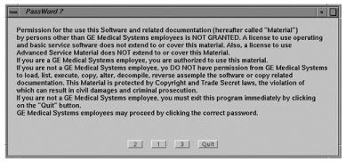
Insert the Restricted or Advanced Service Software DVD and click [OK]. The message shown in Illustration 18 will display while the software is loading, which will take about 3 minutes.
Illustration 18: Configure InSite Menu
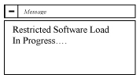
When the InSite Interactive screen displays, select [Accept] three times if performing the InSite checkout at this time, or select [Decline] to perform the checkout later.
The DVD will auto eject after the load is complete.
The three elements for configuring InSite include ProDiags, Health Page, Device Connections and InSite Checkout. Click each tab shown in Illustration 19 and perform the tasks outlined in InSite/IIP.
The instructions in this section provide the minimum number of screens to enable basic functionality for ProDiags and to complete an InSite checkout with the Connectivity Center. For information on the Custom setup, refer to Insite/IIP Installation for Signa Excite 1.5T or 3.0T on the 5190000 Signa Service Methods DVD.
ProDiags is defaulted to call out to the Automated Support Center (ASC) on a daily basis. If the initial attempt to call out fails, the software reattempts to call out hourly until successful. If the modem or network connection is down, these hourly attempts to call out can slow down the scanner. during Insite IIP setup, configure ProDiags to dial out weekly to the ASC and reattempt daily.
| NOTE: | Due to the software changes at the OLC to support iLinq (formerly called InSite Interactive), all 8.3 and higher systems require a Manual Checkout. (FE must call the Connectivity Center for the initial checkout.). Once this is done, the Auto Checkout feature can be used for future reloads. |
Illustration 19: InSite Interactive Platform Configuration Screen
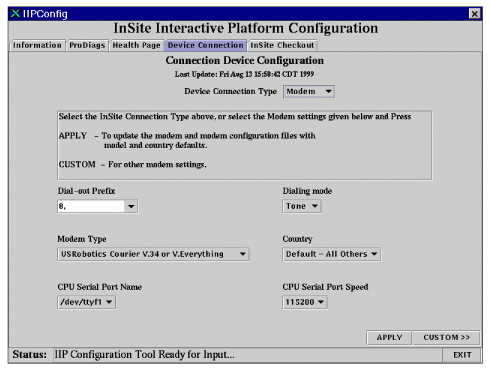
| ||||
| Do not skip the next step even if the site does not have a modem or broadband connection. | ||||
Following Acceptance ( Install System Options, Service Software and InSite, Step 6), the main tabs shown in Illustration 20 are initialized.
Illustration 20: IIP Config Information Tab - Instructions Sub Tab
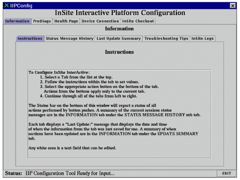
If an InSite modem or broadband connection is not available or will be configured later, select [EXIT] and proceed to Step 6.
Click the ProDiags tab to display the Proactive Diagnostics screen shown in Illustration 21.
Illustration 21: Proactive Diagnostics Tab
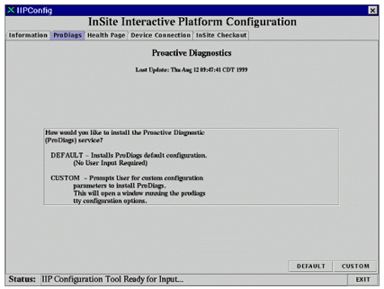
Click the [Default] button to configure ProDiags with the default schedules provided with the software. A status message, ProDiags Auto Setup: Completed Successfully, should display at the bottom of the screen.
When the Health Page screen shown in Illustration 22 displays, click in the Enter Address List box and type a valid email address. Do not press the <Enter> key.
| NOTE: | Make sure to enter correct email address(es). A valid email address is defined as a string in the format: name @ location. The format for GEHC email is: firstname.lastname@ge.com. All email addresses are saved to the /usr/g/config/healthpg.adr file in the format: user <#>=<email address>. |
Illustration 22: Health Page Tab

Click the [Default] button to configure the Health Page with the default schedule file, and the Device Connection screen shown in Illustration 23 will display. (A status message, Health Page Email... Completed Successfully, should also display.)
Illustration 23: Device Connection Tab

Select a dial-out prefix, or type a site-specific prefix. (A dial-out prefix may be required at a site to get a line outside of the hospital. 9,1 is the most common and the default.)
If the site has broadband connection, select Network and type the “gateway” provided by the OLC.
If a mistake is made while configuring the Device Connection tab and the wrong dial-out prefix is entered, it may be necessary to run a Secure from the Service S/W tab and reload the Service Software again.
| NOTE: | Be aware that different switch settings may be recommended for the site's modem compared to the settings that worked with the previous release of software. Verify the modem switch settings match those recommended in the InSite Configuration. |
After properly verifying/configuring any switches or other parameters on the modem, click [OK] on the Modem Readme window (shown in Illustration 24) to program the modem. The InSite Checkout tab (shown in Illustration 25) will display.
Illustration 24: Modem Readme Screen (Example is for USR V.34 Selection)
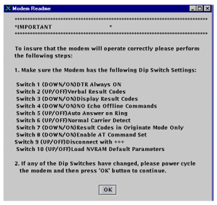
Illustration 25: InSite Checkout Tab
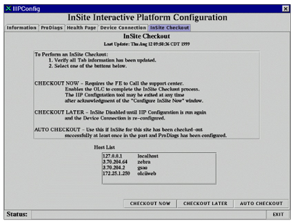
| ||||
| Due to a software bug, boot up to Signa level, shut down, then perform InSite Checkout. | ||||
| NOTE: | The Insite Checkout tab (shown in Illustration 25) allows the user to complete the InSite configuration process. The other checkout options are described below. |
When the [CHECKOUT NOW] button is clicked, the Configure InSite Now window (shown in Illustration 26) displays.
[CHECKOUT NOW] provides the option to run a dial-out test upon completion of the InSite Checkout process. If the [OK] button is selected before the InSite checkout process is complete, the IIP Configuration Tool waits for 10 minutes for an ~insite/sclink.cfg file to be downloaded over the connection. When the file arrives, the dial-out test starts. This test ensures the dial-out prefix provided and the number of the OLC are correct. It also confirms that Proactive Diagnostics messages and Contact GE requests can be sent to the OLC for sites entitled to InSite Interactive.
When the dial-out test is in the process of connecting to the AutoSC, the IIP Configuration GUI will not update and may seem locked up until this connection is completed or the connection times out. Be patient.
Illustration 26: Configure InSite Now Window
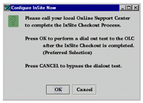
Never select [Disable InSite] as it disables PPP, and will require an FE at the site to invoke this screen for the OLC to be able to complete an InSite Checkout.
If this is selected by mistake, the IIP Configuration Tool must be rerun.
Click the [APPLY] button on the Device Connection tab (shown in Illustration 23), then click the [CHECKOUT NOW] button to enable PPP for dial in.
Do not use [AUTO CHECKOUT] for InSite Checkout because a manual checkout is required to update to the latest model type in the OLC database.
The RestoreInfo process restores the /usr/g/insite/sclink.cfg file needed for Auto Checkout to work.
The AUTO CHECKOUT button will only activate if a ~insite/sclink.cfg file exists in this directory.
After clicking [EXIT] on the InSite Checkout tab (shown in Illustration 25), an Exit Confirmation screen displays. (See Illustration 27.) A valid date/time should display for each function that was successfully configured. If any function shows No File, that function was not properly configured.
Illustration 27: Exit Confirmation with Configuration Summary
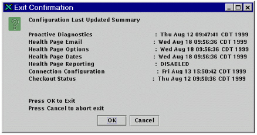
Click [OK] on the Exit Confirmation window to exit the IIP Configuration Tool.
Wait for the message, Restricted Service Load Done, in the Install GUI status bar at the bottom of the window.
Perform a SaveInfo to save the latest changes:
Insert the site SaveInfo media (MOD, CD or DVD) or blank MOD into the drive.
| NOTE: | The Save to MOD process does not create a complete SaveInfo disk. It only creates a copy of the information already entered on the Guided Install tabs in order to update them later during a new installation. (SaveInfo uses the Save/Restore tab.) The [Save GI Configuration to MOD] and SaveInfo can be saved on the same MOD. A separate partition is built for each. |
Select the Save/Restore tab, and click the [Save Information and Save GI] button.
Insert the normal SaveInfo or a new MOD/CD/DVD into the drive if not already there.
At the top left of the Install GUI, select File and [Save GI Configuration to MOD]. (This will save the information that was entered in all the edit fields in the GUI.)
Remove the Restricted or Advanced Service software from the DVD drive.
| ||||
| Sites with in-house contracts may be able to skip these next steps. Only the Revision 7 or higher Service Methods DVD will load. | ||||
Launch the Guided Install.
In the Guided Install window, select Service SW/Insite in the left navigation pane. (See Illustration 28.)
Illustration 28: Loading Service Documents on Scanner

Insert the Service Methods DVD into the disk drive on the PC.
To mount the DVD type: mount/mnt and press [Enter].
Click [Install Service Documentation].
When the message shown in Illustration 29 displays, click [Full CD].
Illustration 29: CD Load Question

After the installation of the DVD contents, remove the DVD from the system:
Open a C-shell.
Type: umount /mnt/cdrom.
Right mouse click on the Common Service Desktop, and select [Logout].
As a part of software setup, load the Operator Manual DVD in the local language. The load will take approximately 12 minutes to complete.
Select Display MOD/CD-ROM from the Guided Install.
When the MOD/CD-ROM tab displays, click [Setup Devices] and follow the outlined tasks. (The message, Device configured, displays once configuration is completed for each device.)
Perform a Daily Automated Quality Assurance (DAQA) scan to verify system integrity. Instructions can be found in the system Operator Manual.
If applicable, verify the system can network to other systems by transferring images.
If applicable, verify the system can properly film.